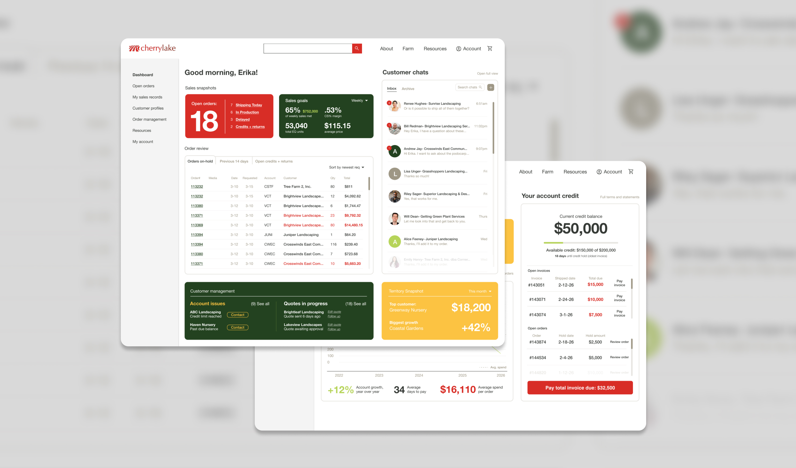
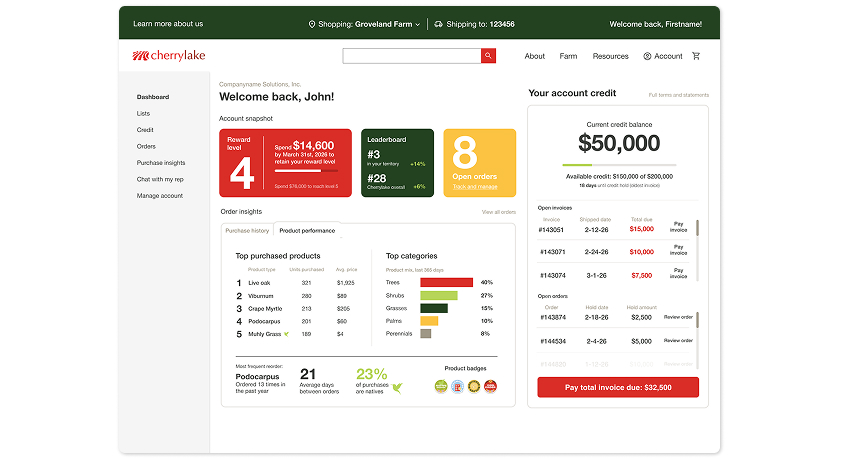
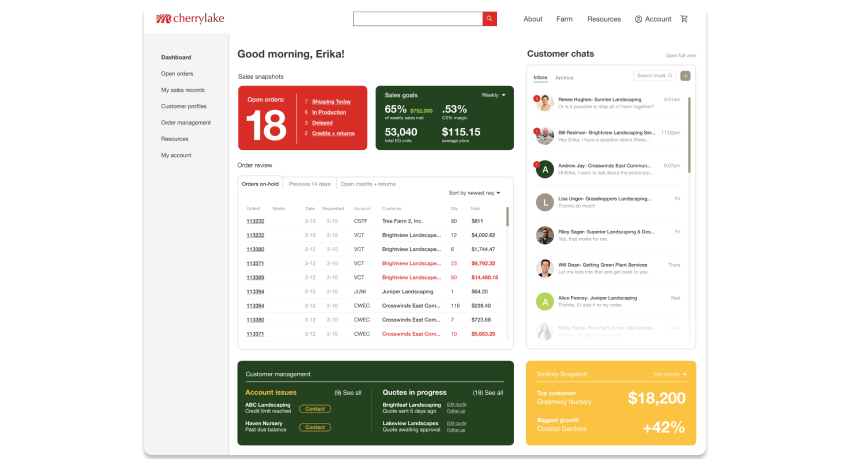

Landscaping is still a relationship-driven, phone-and-email industry, and Cherrylake’s ordering process reflects that. As the company began building its first true e-commerce experience, leadership wanted to see what the best possible version of self-serve ordering could look like with two dashboards: one for customers, and one for sales reps.
I designed two wireframes exploring that vision. These designs haven’t shipped yet, and the scope for the initial launch has since been reduced. But the process behind them demonstrated real strategic design value. It helped build internal buy-in from our Sales, Logistics, and Accounting teams by showing what a successful e-commerce experience could actually look like.

The problem
Right now, all of Cherrylake’s product sales run through sales reps. Customers can view a price list online, but that’s where the current site’s functionality ends: there’s no way to actually place an order without calling or emailing a rep, which means ordering is limited to business hours and customers have no way to self-serve at all. A self-pay option exists for paying down invoices, but it isn’t convenient or visible in the moments customers actually need it. From there, the rep manually handles the logistics, coordinating with the loading team, tracking inventory that changes constantly, and managing the order through to delivery. That model creates real friction on both sides:
- Reps spend a disproportionate amount of time on data entry and order logistics instead of customer relationships or business development.
- Customers are often caught off guard by credit issues. A self-pay option exists on the website, but it isn’t visible to customers when they call to place a new order, so many don’t realize they need to pay down an outstanding invoice until their rep tells them, often after they’ve already described what they want to order.
- Accounting spends time chasing down payment on old invoices before new orders can be processed, adding another manual step to an already slow cycle.
The goal of the e-commerce launch is to make ordering self-serve by default, while continuing to strengthen customer relationships, which are a huge part of Cherrylake’s business and brand strategy. Freeing reps to focus on customer growth and account management rather than order execution is a win-win. From a UX standpoint, the core issue wasn’t just missing functionality, it was that customers had no path to self-serve at all: the self-pay option that did exist was hidden behind a phone call instead of surfaced proactively at the moment a customer needed it.
Approach
There wasn’t a formal research phase built into this project’s timeline, so my primary research was direct and stakeholder-driven rather than a standalone discovery process: structured conversations with Accounting to understand the actual mechanics of credit holds and payment cycles, with Sales leadership to understand rep workflows, motivations, and the specific behaviors they’d already observed in top customers, and with Logistics leadership to understand how order fulfillment and delivery actually worked behind the scenes. Those conversations functioned as my user research, surfacing real pain points and real user goals well before any wireframing started.
Web Dev had also previously surveyed customers about their experience with the existing online price list. Customers reported frustration with slow page load times, outdated product photography, and the structure of the price list itself, which required scrolling through several pages of promotional content before reaching the plant categories they actually wanted, unless they already knew what they were looking for and used the search instead. I treated that data as useful secondary context rather than a primary input, since the new self-serve platform is a different enough product that the two experiences don’t map cleanly onto each other. The underlying lesson — that customers want to get to relevant content quickly without friction — carried directly into how I approached the new dashboards.
What that process didn’t include was formal personas or a dedicated usability-testing round, both of which fell outside the realistic scope and timeline for this stage of work. Instead, the two dashboards were designed around two clearly defined user types, customers and sales reps, each with distinct goals, anxieties, and definitions of success, which shaped every decision that followed.
The brief
The brief I was given wasn’t “design the V1 cart flow.” It was closer to: what’s the best end result we can imagine here? That kind of open-ended brief is a different design problem than shipping a feature, and a rare opportunity to design to the best case scenario. It’s about mapping the full shape of what’s possible, so the team has a real north star to scope down from, rather than guessing at what a “good enough” V1 should include.
Designing the customer dashboard
The customer dashboard needed to solve the credit-and-payment friction problem head-on, while also giving customers a reason to actually want to log in and self-serve. The guiding UX principle was surfacing information proactively instead of reactively, putting the things a customer needs to see or act on in front of them by default, rather than requiring them to ask a rep or dig through old invoices to find it. Working with Accounting to understand how credit holds and payment cycles actually worked, I designed a dashboard that surfaces:
- Credit history with one-click access to pay down a balance, visible immediately rather than buried behind a rep conversation, removing the exact friction point that was creating frustration in the current process
- Full order history and purchase insights, so customers can reorder easily and see their own buying patterns
- A snapshot of rewards level, since higher-volume customers (PDLs) earn better discounts, and making that status visible taps into an existing behavior sales leadership had already observed — larger customers respond well to visible, competitive status cues
- Direct chat access to their rep, preserving the relationship even inside a self-serve flow
- Light gamification and “delightful” data moments, designed to reduce the sense that self-service is a downgrade from talking to a person, and instead make it feel like a genuine upgrade

Designing the sales rep dashboard
The rep dashboard was solving a different problem, and one with real internal stakes: as the company moved toward e-commerce, some reps understandably worried the technology might be replacing them rather than supporting them. This dashboard needed to prove the opposite — that a better tool could take the busywork off of their plates and let them spend more time on what actually grows revenue. Designing for that meant treating reps as a distinct user group with their own goals and anxieties, not a secondary audience to the customer experience, and letting that shape both the feature set and how it was framed.

I designed the dashboard to function as a lightweight book-of-work, with room to grow into something closer to a full CRM over time. It consolidates several previously scattered tools into one place, reducing the cognitive load of tracking work across multiple systems, and brings together:
- Open orders, broken down by category, so reps can see the full shape of their active work at a glance. Managing order cutoffs had been a persistent, stressful problem for reps: I sat in on a sales meeting where the team was brainstorming ways to catch orders in time, including mounting large TVs around the office just to display open orders so reps could scramble to call customers before a deadline passed. That’s part of why open orders live front and center on the dashboard, as one piece of a “command center” view where the most time-sensitive, important information is all in one place instead of scattered or dependent on someone noticing a TV screen in time.
- Progress against sales goals and targets, replacing manual tracking buried in a pile of spreadsheets
- A chat inbox for direct customer communication, keeping conversations out of a crowded email inbox
- Account issues and in-progress quotes, surfaced in one place instead of living across separate tools and systems
The front page of the dashboard was designed to be strictly action-item oriented: the things a rep needs to see and act on that day, front and center, with everything else organized into tabs rather than competing for space on the main view. Prioritizing daily-use features on the landing screen, and letting less time-sensitive information live a click away, kept the “command center” from becoming just another cluttered inbox.
The framing mattered as much as the feature set here: this wasn’t pitched as automation replacing reps, but as infrastructure that could eventually replace the company’s aging, scattered systems with one tool built for both current account management and new business development.
Testing the brand system in a new context
This project also became a useful, low-stakes way to test how far Cherrylake’s newer brand system could stretch into a genuinely different kind of experience. Going in, I expected the site to lean almost entirely on the core palette — the red, softened black, and stone gray. In practice, that read as colder than the site needed to feel for a self-serve product customers were going to spend real time in, especially since we wanted to incorporate what we’ve named “delightful data.”
Bringing in a few colors from the expanded palette — a dark green, a light green, and a yellow — warmed the experience up noticeably without pulling it out of Cherrylake’s core identity. That small shift ended up being a useful data point for the brand system more broadly: it’s not just a set of rules for print materials and internal events, but flexible enough to shape a digital product too, which felt important as more of Cherrylake’s presence moves online.
Cross-functional collaboration
None of these dashboards could have been designed in isolation. I worked directly with Accounting to understand how credit and payment processes actually functioned before designing around them, with Sales leadership to understand what actually motivates and reassures reps, with Logistics leadership to understand how fulfillment and delivery actually worked, and with company leadership to translate a genuinely open-ended, “best possible outcome” brief into something concrete enough to react to and refine.
Where this stands now
These wireframes went further than what made sense for the initial e-commerce launch. As the company has scoped V1, leadership, Accounting, and Sales have been working through the underlying business logic — how credit, freight, and order management should actually function at launch — and the scope has narrowed quite a bit accordingly. The full dashboards aren’t part of the current build.
That doesn’t make the work a dead end. These designs did exactly what blue-sky concepts are supposed to do: they gave leadership something concrete to react to, proved that a self-serve model could genuinely address the credit-friction and rep-workload problems it set out to solve, and gave the team a clear picture of where the product could grow toward after launch. Sometimes the most valuable output of a design process isn’t what ships first, but the shared vision everyone is now building toward, and in a transition like this one, getting internal buy-in can matter just as much as external adoption, at least in the beginning. A tool reps trust and champion is what makes external adoption possible in the first place.